ജീവശാസ്ത്രം - IX
y മൂന്നുഡൊൊമെയ്ൻ y പുതിയതായി കണ്ടെത്തുന്ന വർഗീകരണം ജീവികളുടെ വർഗീകരണം y ജന്തുക്കളുടെ വർഗീകരണം y പരിണാമവൃക്ഷം y സസ്യയങ്ങളുടെ വർഗീകരണം y ഡി.എൻ.എ. ബാർകോോഡിങ് 139

ജീവശാസ്ത്രം - IX
y മൂന്നുഡൊൊമെയ്ൻ y പുതിയതായി കണ്ടെത്തുന്ന വർഗീകരണം ജീവികളുടെ വർഗീകരണം y ജന്തുക്കളുടെ വർഗീകരണം y പരിണാമവൃക്ഷം y സസ്യയങ്ങളുടെ വർഗീകരണം y ഡി.എൻ.എ. ബാർകോോഡിങ് 139


ജീവശാസ്ത്രം - IX
ആർക്കിബാക്ടീരിയ മറ്റ് ബാക്ടീരിയ കളിൽ നിന്നും കോോശഭിത്തി, കോോശസ്തരം എന്നിവയിലും പ്രരോട്ടീൻ നിർമ്മാണത്തിലും വ്യത്യയാസപ്പെട്ടിരിക്കുന്നു. ഏതു പ്രതികൂലസാഹചര്യത്തെയും തരണം ചെയ്യാൻ അവയ്ക്ക് പ്രത്യയേക കഴിവുണ്ട്.
ആർക്കിബാക്ടീരിയ കിങ്ഡം മൊൊനീറയിൽ ഉൾപ്പെടുമോോ?
കൈറ്റ് വിക്ടേഴ്സ് ചാനലിലെ പ്രോഗ്രാം കാണുന്ന കുട്ടിയുടെ സംശയം ശ്രദ്ധിച്ചുവല്ലലോ. നിങ്ങളുടെ പ്രതികരണം എന്തായിരിക്കും? ........................................................................................................................................... ഇത്തരം സംശയങ്ങളിൽ നിന്നാണ് ഉരുത്തിരിഞ്ഞതും പുതുക്കപ്പെട്ടതും.
വർഗീകരണരീതികൾ
ജീവികളെ തിരിച്ചറിയുന്നതും അവയുടെ സവിശേഷതകൾ മനസ്സി ലാക്കുന്നതും വർഗീകരണരീതികളിൽ കൂട്ടിച്ചേർക്കലുകളുംം പുതുക്ക ലുകളുംം വരുത്തുന്നു. അഞ്ചുകിങ്ഡം വർഗീകരണരീതിയും പുതു ക്കലിന് വിധേയമായിട്ടുണ്ട്. നൽകിയ വിവരണവും ചിത്രീകരണവും (6.1) സൂചകങ്ങളെ അടിസ്ഥാനമാക്കി വിശകലനം ചെയ്ത് കുറിപ്പ് തയ്യാറാക്കൂ.
140


ജീവശാസ്ത്രം - IX
മൂന്ന് ഡൊൊമെയ്ൻ വർഗീകരണം
ബാക്ടീരിയ
ആർക്കിയ
യ ലി ിമേ ന അ
ലാന് റേ
ംജ ഫ
യൂക്കാരിയ
പ്
ൈ
ടിസ്റ്റ രോട് പ്ര
ആ
ബാ ക് ടീര ി
യ
ർക്കിയ
കാൾ വൗസ് (1928-2012) എന്ന ശാസ്ത്രജ്ഞൻ കിങ്ഡം മൊൊനീറയിൽ ഉൾപ്പെട്ടിരുന്ന ജീവികളെ കൂടുതൽ അറിയാൻ ശ്രമിച്ചു. ശാസ്ത്രീയ നിരീക്ഷണത്തിലൂടെ മൊൊനീറയിൽ ഉൾപ്പെട്ട ചില സൂക്ഷ്മജീവികൾ ബാക്ടീരിയകളിൽ നിന്നും വ്യത്യസ്തമാണെന്ന് അദ്ദേഹം മനസ്സിലാക്കി. ഇവയുടെ ഘടനയിലെ വ്യത്യയാസങ്ങളും ചുറ്റുപാടിലുണ്ടാകുന്ന മാറ്റങ്ങളെ അതിജീവിക്കാനുള്ള വ്യത്യസ്ത അനുകൂലനങ്ങളും കാൾ വൗസ് അദ്ദേഹം ശ്രദ്ധിച്ചു. ഇത്തരം ജീവികളിലെ ജനിതകവസ്തുക്കൾ ബാക്ടീരിയയിൽ നിന്ന് വ്യത്യസ്തമാണെന്ന് തിരിച്ചറിഞ്ഞു. ഇതിന്റെ അടിസ്ഥാനത്തിൽ കിങ്ഡം മൊൊനീറയെ രണ്ടായി വിഭജിച്ച് ബാക്ടീരിയ, ആർക്കിയ എന്നീ രണ്ട് കിങ്ഡങ്ങൾ ആക്കുകയും കിങ്ഡത്തിന് മുകളിലായി ഡൊൊമെയ്ൻ എന്ന വർഗീകരണതലം കൂടി ഉൾപ്പെടുത്തുകയും ചെയ്തു. ആറുകിങ്ഡങ്ങളിലും ഉൾപ്പെടുന്ന ജീവികളെ മൂന്ന് ഡൊൊമെയ്നുകളിലായി ക്രമീകരിച്ചു. ഇവയ്ക്ക് ഡൊൊമെയ്ൻ ബാക്ടീരിയ, ഡൊൊമെയ്ൻ ആർക്കിയ, ഡൊൊമെയ്ൻ യൂക്കാരിയ എന്നിങ്ങനെ പേര് നല്കി.
കിങ്ഡം
ഡൊൊമെയ്ൻ
ചിത്രീകരണം 6.1 ആറുകിങ്ഡം വർഗീകരണം 141

ജീവശാസ്ത്രം - IX
y വർഗീകരണശാസ്ത്രത്തിൽ കാൾ വൗൗസിന്റെ സംഭാവന. y കിങ്ഡം മൊൊനീറയെ ആർക്കിയ, ബാക്ടീരിയ എന്നീ വ്യയത്യയസ്ത കിങ്ഡങ്ങൾ ആക്കിയതിന്റെ പ്രസക്തി. y ഡൊൊമെയ്നുകളുംം അവയിൽ ഉൾപ്പെടുന്ന കിങ്ഡങ്ങളുംം. ജീവികളെ വിവിധ കിങ്ഡങ്ങളായി തരംതിരിച്ചിരിക്കുന്നത് എങ്ങനെ യെന്ന് നിങ്ങൾ മനസ്സിലാക്കിയല്ലലോ. കിങ്ഡങ്ങളുടെ സവിശേഷതകൾ, ഉദാഹരണങ്ങൾ ഉൾപ്പെടുത്തി ചിത്രീകരണം 6.2 പൂർത്തിയാക്കുക.
ബാക്ടീരിയ
എന്നിവ
ആർക്കിയ
y പ്രോോകാരിയോോട്ടുകൾ.
y പ്രോോകാരിയോോട്ടുകൾ.
y കോോശഭിത്തിയിൽ പെപ്റ്റിഡോോഗ്ലൈക്കൻ അടങ്ങിയിരിക്കുന്നു.
y കോോശഭിത്തിയിൽ പെപ്റ്റിഡോോഗ്ലൈക്കൻ ഇല്ല.
y മണ്ണ്, ജലം, മറ്റ് ജീവികൾ തുടങ്ങി എല്ലായിടത്തും കാണപ്പെടുന്നു.
y ചൂട് നീരുറവകൾ, ലവണങ്ങൾ കൂടുതലുള്ള പ്രദേശങ്ങൾ, തുടങ്ങിയ അസാധാരണ മേഖലകളിൽ കാണപ്പെടുന്നു.
ഉദാ: റൈസോോബിയം, വിബ്രിയോോ കോോളറെ
ഉദാ: തെർമോോകോോക്കസ്, ഹാലോോബാക്ടീരിയം
അനിമേലിയ
പ്രരോട്ടിസ്റ്റ
y ...................................................... y ...................................................... ഉദാ : ...................................................... ......................................................
y ...................................................... y ...................................................... ഉദാ : ...................................................... ......................................................
കിങ്ഡം
പ്ലാന്റേ
ഫംജൈ
y ...................................................... y ...................................................... ഉദാ : ...................................................... ......................................................
y ...................................................... y ...................................................... ഉദാ : ...................................................... ......................................................
ചിത്രീകരണം 6.2 കിങ്ഡങ്ങളും സവിശേഷതകളും വൈവിധ്യമാർന്ന ജന്തുലോോകത്തെക്കുറിച്ചും സസ്യലോോകത്തെക്കു റിച്ചും കൂടുതൽ മനസ്സിലാക്കിയാലോോ. 142


ജീവശാസ്ത്രം - IX
ജന്തുക്കളുടെ വർഗീകരണം
ശരീരഘടന, ശരീരഅറ, ബിജപാളികൾ (Germ Layers), ശരീരസമമിതി (Body Symmetry) എന്നിവയെ അടിസ്ഥാനമാക്കി ജന്തുക്കളെ വിവിധ ഫൈലങ്ങളിൽ ഉൾപ്പെടുത്തിയിരിക്കുന്നു. ചില ജന്തുക്കളുടെ വർഗീകരണതലങ്ങളിൽ ഫൈലത്തിനും ക്ലാസിനുമിടയിൽ സബ്ഫൈലം, ഡിവിഷൻ, സൂപ്പർക്ലാസ് എന്നീ ഉപവിഭാഗങ്ങൾ കൂടിയുണ്ട്. ചിത്രീകരണം 6.3 (a, b, c) വിശകലനം ചെയ്ത് കിങ്ഡം അനിമേലിയയിൽ ഉൾപ്പെടുന്ന ജീവികളെ വിവിധ ഫൈലങ്ങളായി തരംതിരിച്ചിരിക്കുന്നത് മനസ്സിലാക്കി വർക്ക്ഷീറ്റ് 6.1 പൂർത്തിയാക്കൂ.
കിങ്ഡം അനിമേലിയയിൽ ഉൾപ്പെടുന്ന ഫൈലങ്ങൾ പോോറിഫെറ
നിഡേറിയ (സീലന്ററേറ്റ)
ശരീരത്തിലാകമാനം സൂക്ഷ്മ സുഷിരങ്ങളുള്ള ജലജീവികൾ ഉദാ: സ്പപോഞ്ചുകൾ
നിഡോോബ്ലാസ്റ്റോടു കൂടിയ ടെന്റക്കിളുകളുള്ള ജലജീവികൾ ഉദാ: ഹൈഡ്ര, ജെല്ലിഫിഷ്, കടൽപൂവ്
പ്ലാറ്റിഹെൽമിന്തസ്
നിമറ്ററോഡ
ചെറുതും മൃദുവായതും പരന്ന ശരീരവുമുള്ള വിരകൾ ഉദാ: പ്ലനേറിയ, നാടവിര, ഫ്ലൂക്ക്
നീണ്ടുരുണ്ട ശരീരമുള്ള വിരകൾ ഉദാ: ഉരുണ്ടവിര, കൊൊക്കപ്പുഴു, കൃമി
ചിത്രീകരണം 6.3 (a) ജന്തുക്കളുടെ വർഗീകരണം 143


ജീവശാസ്ത്രം - IX
അനലിഡ
ആർത്രരോപോോഡ
ഖണ്ഡങ്ങളോോട് (Segments) കൂടിയ ശരീരമുള്ള ജീവികൾ
ചെറുഭാഗങ്ങൾ കൂടിച്ചേർന്ന കാലുകൾ (Jointed legs) ഉള്ള ജീവികൾ, ബാഹ്യയാസ്ഥികൂടം ഉണ്ട്.
ഉദാ: മണ്ണിര, കുളയട്ട
ഉദാ: കൊൊഞ്ച്, പാറ്റ, ഞണ്ട്
മൊൊളസ്ക
എക്കിനോോഡെർമേറ്റ
മൃദുശരീരം, ഭൂരിഭാഗം ജീവികളിലും ശരീരത്തെ പൊൊതിഞ്ഞ് കാത്സ്യം കാർബണേറ്റ് കവചം
മുള്ളുകളുള്ള (Spines) ശരീരത്തതോട് കൂടിയ സമുദ്രജീവികൾ
ഉദാ: ഒച്ച്, നീരാളി, കക്ക
ഉദാ: കടൽച്ചേന, നക്ഷത്രമത്സ്യം
ചിത്രീകരണം 6.3 (b) ജന്തുക്കളുടെ വർഗീകരണം 144


ജീവശാസ്ത്രം - IX
കോോർഡേറ്റ
നോോട്ടോോകോോർഡും നട്ടെല്ലും
ദണ്ഡാകൃതിയിലുള്ള നോോട്ടടോകോോർഡ് (Notochord) ഉള്ളവയോോ, നട്ടെല്ലുള്ളവയോോ ഉദാ : മനുഷ്യൻ, മത്സ്യം, തവള
ചിത്രീകരണം 6.3 (c) ജന്തുക്കളുടെ വർഗീകരണം
ഫൈലം കോോർഡേറ്റയിലെ ജീവി കളിൽ വളർച്ചയുടെ ആദ്യയഘട്ടങ്ങ ളിലോോ ജീവിതകാലം മുഴുവനുമായോോ നട്ടെ ല്ലിൻ്റ സ്ഥാനത്ത് ദണ്ഡുപോോലെ കാണപ്പെടുന്ന ഭാഗ മാണ് നോോട്ടോോകോോർഡ്. ഫൈലം കോോർഡേറ്റയ്ക്ക് ആ പേര് വരാനുള്ള കാരണം നോോട്ടോോ കോോർഡിൻ്റെ സാന്നിധ്യയമാ ണ്. ഫൈലം കോോർഡറ്റേയിലെ മൂന്ന് സബ് ഫൈലങ്ങളാണ് യൂറോോ കോോർഡേറ്റ, സെഫാലോോ കോോർഡേറ്റ, വെർട്ടിബ്രേറ്റ എന്നിവ. ഇവയിൽ വ്യയത്യയസ്ത തരത്തിലാണ് നോോട്ടോോകോോർഡ് കാണപ്പെടുന്നത്. സബ് ഫൈലം യൂറോോകോോർഡേറ്റയിൽ നോോട്ടോോ കോോർഡ് ലാർവാവസ്ഥയിൽ വാൽഭാഗത്ത് മാത്രമായി പരിമിതപ്പെട്ടിരിക്കുന്നു. എന്നാൽ സബ് ഫൈലം സെഫാലോോകോോർഡേറ്റയിൽ ഉൾപ്പെടുന്ന ജീവികളിൽ തലമുതൽ വാൽവരെ കാണപ്പെടുന്ന നോോട്ടോോകോോർഡ് ജീവിതാവസാനം വരെ നിലനിൽക്കുന്നു. സബ്ഫൈലം വെർട്ടിബ്രേറ്റയിലാകട്ടെ നോോ ട്ടോോകോോർഡ് ഭ്രൂണാവസ്ഥയിൽ മാത്രം കാണ പ്പെടുകയും വളരുമ്പോോൾ ഇത് നട്ടെല്ലായി രൂപാന്തരം പ്രാപിക്കുകയും ചെയ്യുന്നു.
പ്രത്യയേകത
ഫൈലം
ഉദാഹരണം കടൽച്ചേന, നക്ഷത്രമത്സ്യം
മുള്ളുകളുള്ള ശരീരത്തോോടുകൂടിയ സമുദ്രജീവികൾ
നിമറ്റോോഡ ശരീരത്തിലാകമാനം സൂക്ഷ്മസുഷിരങ്ങളുള്ള ജലജീവികൾ
സ്പോോഞ്ചുകൾ
നിഡോോബ്ലാസ്റ്റോോടുകൂടിയ ടെന്റക്കിളുകളുള്ള ജലജീവികൾ
ഒച്ച്, നീരാളി ഖണ്ഡങ്ങളോോടുകൂടിയ ശരീരമുള്ള ജീവികൾ
ആർത്രോോപോോഡ പ്ലാനേറിയ, നാടവിര കോോർഡേറ്റ
വർക്ക്ഷഷീറ്റ് 6.1 145

ജീവശാസ്ത്രം - IX
നോോട്ടടോകോോർഡ് ഉള്ള ജീവികളാണ് ഫൈലം കോോർഡേറ്റയിൽ ഉൾപ്പെടുന്നത്. ഇവയിൽ നട്ടെല്ലുള്ള ജീവികളെ വെർട്ടിബ്രേറ്റ എന്ന സബ്ഫൈലത്തിൽ ഉൾപ്പെടുത്തിയിരിക്കുന്നു. ഇതിൽ ഉൾപ്പെടുന്ന ജീവികളെ വീണ്ടും തരംതിരിച്ചിരിക്കുന്നത് എങ്ങനെയെന്ന് പട്ടിക 6.1 വിശകലനം ചെയ്തും അധിക വിവരം ശേഖരിച്ചും ധാരണ കൈവരിക്കൂ. ഇതിന്റെ അടിസ്ഥാനത്തിൽ ബോോക്സിൽ നൽകിയിരിക്കുന്ന ജീവികളെ ഉൾപ്പെടുത്തി പട്ടിക പൂർത്തിയാക്കൂ. സൂപ്പർ ക്ലാസ്
ക്ലാസ്
പിസസ് ചിറകുകൾ
കോോൺട്രിക്തിസ് (തരുണാസ്ഥി മത്സ്യം)
ഉള്ളവ
ഓസ്റ്റിക്തിസ് (അസ്ഥി മത്സ്യം)
(Fins)
ടെട്രാപ്പപോഡകാലുകൾ
പ്രത്യയേകതകൾ
ഉള്ളവ
ശരീരത്തിൽ ശല്ക്കങ്ങൾ (scales), ഹൃദയത്തിന് രണ്ട് അറകൾ, ആവാസം ........................................................... ചലനോോപാധി .................................................. ശ്വസനാവയവങ്ങൾ.........................................
ആംഫിബിയ (ഉഭയജീവികൾ)
കരയിലും ജലത്തിലുമായി ജീവിതചക്രം പൂർത്തിയാക്കുന്നു, ഈർപ്പവും വഴുവഴു പ്പുമുള്ള ത്വക്ക്, മുട്ടയിടുന്നു. ശ്വസനാവയവങ്ങൾ................................................... ഹൃദയഅറകളുടെ എണ്ണം .....................................
റെപ്റ്ററിലിയ (ഉരഗങ്ങൾ)
ഇഴജന്തുക്കൾ, വരണ്ടത്വക്ക്, ശരീരത്തിൽ ശല്ക്കങ്ങൾ, വിരലുകളിൽ നഖങ്ങൾ. ശ്വസനാവയവം.......................................................... ഹൃദയഅറകളുടെ എണ്ണം...................................... പ്രജനനരീതി ............................................................
ഏവ്സ് (പക്ഷികൾ)
തൂവലുകളാൽ പൊൊതിഞ്ഞ ശരീരം, ചിറകുകൾ, വിരലുകളിൽ നഖങ്ങൾ. ശ്വസനാവയവം.......................................................... ഹൃദയഅറകളുടെ എണ്ണം...................................... പ്രജനനരീതി ............................................................
മമ്മേലിയ (സസ്തനികൾ)
രോോമങ്ങളാൽ പൊൊതിഞ്ഞ ശരീരം, വിരലുകളിൽ നഖങ്ങൾ, പാലൂട്ടുന്നു. ശ്വസനാവയവം........................................................... ഹൃദയഅറകളുടെ എണ്ണം....................................... പ്രജനനരീതി .............................................................
(Limbs)
ഉദാഹരണങ്ങൾ
പട്ടിക 6.1 സബ് ഫൈലം വെർട്ടിബ്രേറ്റയുടെ വർഗീകരണം ണ്ണി മുതല, ചീങ്ക െ ുട എന്നിവയ െ ഹൃദയത്തില െ അറകളുട എണ്ണം കണ്ടെത്തൂ.
തവള, രോോഹു, പൂച്ച, മുതല, അയല, മരത്തവള, കിവി, അണലി, കാക്ക, പല്ലി, ഓന്ത്, കോോഴി, പശു, പ്രാവ്, കടുവ, കരിമീൻ, സ്രാവ്, ഡോോൾഫിൻ, സാലമാണ്ടർ, ചീങ്കണ്ണി, പാമ്പ്, ആന, പെൻഗ്വിൻ നിങ്ങളുടെ പരിസരത്തുള്ള മറ്റു ജന്തുക്കളെ നിരീക്ഷിച്ച് അവയെ വിവിധ ക്ലാസുകളിൽ ഉൾപ്പെടുത്തി ഒരു ഡിജിറ്റൽ പ്രസന്റേഷൻ തയ്യാറാക്കി ക്ലാസിൽ അവതരിപ്പിക്കൂ. 146
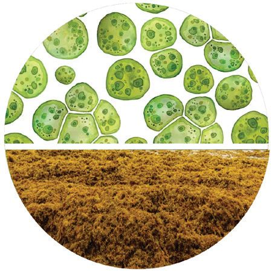
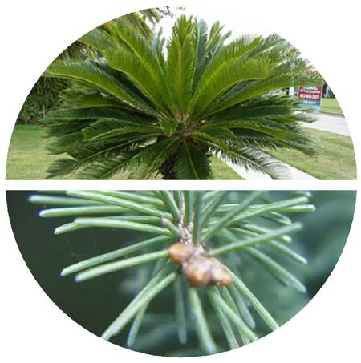
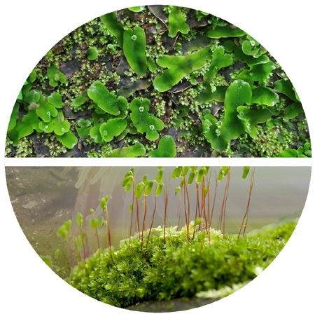
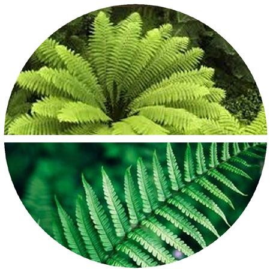
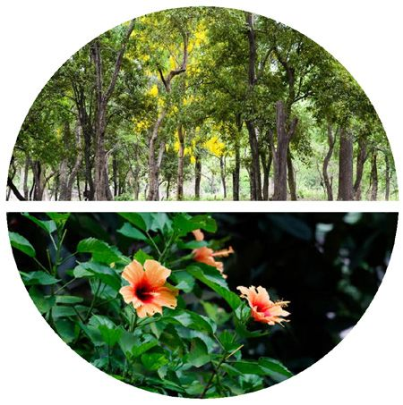
ജീവശാസ്ത്രം - IX
സസ്യങ്ങളുടെ വർഗീകരണം ജന്തുക്കളെ വിവിധ വിഭാഗങ്ങളിലായി വർഗീകരിച്ചത് മനസ്സിലാക്കി യല്ലലോ. ശരീരഘടന, സംവഹനവ്യവസ്ഥ, വിത്തുരൂപീകരണം എന്നിവ യിലെ സാമ്യ-വ്യത്യയാസങ്ങളുടെ അടിസ്ഥാനത്തിൽ കിങ്ഡം പ്ലാന്റേയെ വിവിധ ഡിവിഷനുകളായി വർഗീകരിച്ചിരിക്കുന്നു. ചിത്രീകരണം 6.4 വിശകലനം ചെയ്ത് സൂചകങ്ങളുടെ അടിസ്ഥാനത്തിൽ കുറിപ്പ് തയ്യാറാക്കൂ.
കിങ്ഡം പ്ലാന്റേയുടെ ഡിവിഷനുകൾ ആൽഗേ
ബ്രയോോഫൈറ്റ
ടെറിഡോോഫൈറ്റ
മിക്കവയുടെയും ആവാസം ജലമാണ്. ഈർപ്പമുള്ള പ്രതലങ്ങളിൽ പ്രധാനമായും കരസസ്യങ്ങൾ, താലസ് എന്ന് വിശേഷിപ്പിക്കുന്ന കൂടുതലായും കാണപ്പെടുന്നു. വേര്, വേര്, കാണ്ഡം, ഇല എന്നിവ ശരീരത്തിൽ ഉയർന്ന കാണ്ഡം, ഇല എന്നിവ പോോലുള്ള രൂപപ്പെട്ടിട്ടുണ്ട്, സസ്യങ്ങളുടേതുപോോലെയുള്ള വേരോോ ഭാഗങ്ങൾ ഉണ്ട്. പ്രത്യയുൽപാദനം പ്രത്യയുൽപാദനം പ്രധാനമായും ഇലയോോ കാണ്ഡമോോ കാണപ്പെടുന്നില്ല. ഗമീറ്റുകളിലൂടെയും സ്പപോറുകളിലൂടെ. ലൈംഗികവും അലൈംഗികവുമായ സ്പപോറുകളിലൂടെയും. ലളിതഘടനയുള്ള പ്രത്യയുൽപാദന രീതികൾ സംവഹനകലകൾ ഇല്ല. സംവഹനകലകൾ കാണപ്പെടുന്നു. സംവഹനകലകൾ ഇല്ല. കാണപ്പെടുന്നു.
ഉദാ: സ്പൈറോോഗൈറ, സർഗാസം
ഉദാ: റിക്സിയ, ഫ്യൂണേറിയ
ഉദാ: ലൈക്കകോപോോഡിയം, ടെറിസ്
ജിംനോോസ്പേംസ്
ആൻജിയോോസ്പേംസ്
കോോണുകൾ എന്ന് അറിയപ്പെടുന്ന പ്രത്യയുൽപാദന ഭാഗങ്ങൾ കാണപ്പെടുന്നു. വിത്തുകൾ രൂപപ്പെടുന്നു ണ്ടെങ്കിലും അവയെ പൊൊതിഞ്ഞ് ഫലങ്ങൾ ഇല്ല. സങ്കീർണ്ണ സംവഹനകലകൾ കാണപ്പെടുന്നുണ്ടെങ്കിലും സൈലം വെസലുകൾ കാണപ്പെടുന്നില്ല.
പൂക്കളിലാണ് പ്രത്യയുൽപാദനഭാഗങ്ങൾ ഉള്ളത്. വിത്തുകളെ പൊൊതിഞ്ഞ് ഫലങ്ങൾ കാണപ്പെടുന്നു. സങ്കീർണ്ണ സംവഹനകലകൾ കാണപ്പെടുന്നു. സൈലം വെസലുകളും ട്രക്കീഡുകളും ഉണ്ട്.
ഉദാ: സൈക്കസ്, പൈൻ ഉദാ: ചെമ്പരത്തി, മാവ്, തെങ്ങ് ചിത്രീകരണം 6.4 സസ്യങ്ങളുടെ വർഗീകരണം 147
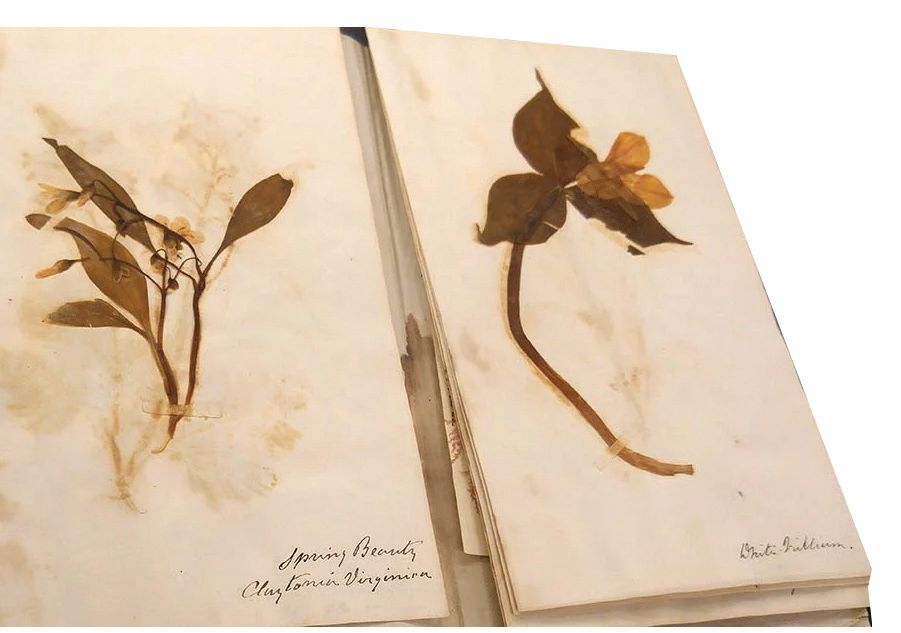
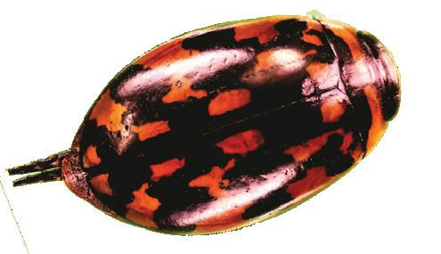
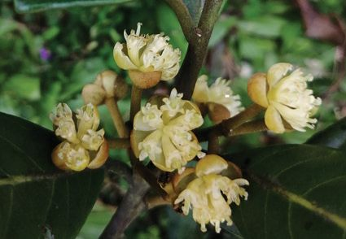
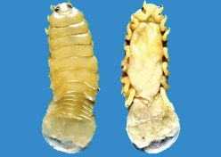
ജീവശാസ്ത്രം - IX
y y y
കിങ്ഡം പ്ലാന്റേയിലെ വിവിധ ഡിവിഷനുകൾ പ്രത്യുൽപാദനത്തിലെ സവിശേഷതകൾ സംവഹനകലകളുടെ സാന്നിധ്യം
വർഗീകരണത്തിലെ വ്യത്യയാസം ആദ്യകാലങ്ങളിൽ കിങ്ഡം പ്ലാന്റേയെ താലോോഫൈറ്റ, ബ്രയോോഫൈറ്റ, ടെറിഡോോഫൈറ്റ, ജിംനോോസ്പേംസ്, ആൻജിയോോ സ്പേംസ് എന്നിങ്ങനെ അഞ്ച് ഡിവിഷനുകളായി തരം തിരിച്ചിരുന്നു. താലോോഫൈറ്റയിൽ ആൽഗകളും ഫംഗസുകളും ഉൾപ്പെട്ടിരുന്നു. എന്നാൽ പിന്നീട് വന്ന വർഗീകരണരീതികളിൽ ഫംഗസുകളെ അവയുടെ പ്രത്യയേകതകളുടെ അടിസ്ഥാനത്തിൽ പ്രത്യയേകം കിങ്ഡത്തിൽ ഉൾപ്പെടുത്തി. പുതിയ വർഗീകരണ രീതികളിൽ പലതിലും ചില ആൽഗകളെ കിങ്ഡം പ്രോട്ടിസ്റ്റ യിലും ഉൾപ്പെടുത്തിക്കാണുന്നുണ്ട്. സസ്യങ്ങളുമായി ധാരാ ളം സവിശേഷതകൾ പങ്കിടുന്ന ആൽഗകളെ കിങ്ഡം പ്ലാന്റേ യിൽത്തന്നെ ഉൾപ്പെടുത്തിയും വർഗീകരിക്കപ്പെട്ടിട്ടുണ്ട്. സസ്യങ്ങളെ വർഗീകരിച്ചിരിക്കുന്നതെങ്ങനെ എന്ന് മനസ്സിലാക്കിയല്ലലോ. ഓരോോ തലത്തിലും ഉൾപ്പെടുന്ന കൂടുതൽ സസ്യങ്ങളെ കണ്ടെത്തി പട്ടികപ്പെടുത്തൂ. അധ്യയാപികയുടെ സഹായത്തതോടെ അവയുടെ ഹെർബേറിയം തയ്യാറാക്കൂ. ഹെർബേറിയത്തിൽ ഉൾപ്പെടുത്തിയിരിക്കുന്ന സസ്യങ്ങളെ ശാസ്ത്രീയമായി വർഗീകരിച്ച് പേര് നൽകിയിരിക്കുന്നത് എങ്ങനെ യായിരിക്കും? ചുവടെ നൽകിയിരിക്കുന്ന ശാസ്ത്രലേഖനഭാഗം ശ്രദ്ധിക്കൂ.
പേരിനുള്ളിലെ പെരുമ
ജീവികളുടെ ശാസ്ത്രീയനാമങ്ങളിലും കാണാം ചില കൗതുകക്കാഴ്ചകൾ......
സാന്ദ്രാകോോട്ടസ് വിജയകുമാറി
(Sandracottus vijayakumari)
നെല്ലിയാമ്പതിയിൽ കണ്ടെ ത്തിയ പുതിയ ഇനം വണ്ട്
ലിറ്റ്സസിയ വാഗമോോണിക
ബ്രൂസെത്തതോവ ഇസ്രരോ
വാഗമണിൽ കണ്ടെത്തിയ കുറ്റിപ്പാണൽ വിഭാഗത്തിൽ പ്പെട്ട പുതിയ സസ്യയം
കൊൊല്ലം കടൽത്തീരത്ത് മത്സസ്യങ്ങളിൽ കണ്ടെത്തിയ ഒരിനം പരാദജീവി
(Litsea vagamonica)
148
(Brucethoa ISRO)
ജീവശാസ്ത്രം - IX
ഇത്തരത്തിൽ ജീവികളെ പുതുതായി കണ്ടെത്തിക്കകൊണ്ടിരിക്കുന്നു. അവയെയെല്ലാം വർഗീകരിക്കാനുള്ള ശ്രമങ്ങൾ തുടരുകയും ചെയ്യുന്നു. എങ്ങനെയാണ് പുതുതായി കണ്ടെത്തുന്ന ഒരു ജീവി നിലവിൽ വർഗീകരിക്കപ്പെട്ടിട്ടില്ല എന്ന് മനസ്സിലാക്കാനാകുക? നിങ്ങളുടെ ഊഹം കുറിക്കൂ. ........................................................................................................................................... ........................................................................................................................................... വിവരണം വിശകലനം ചെയ്ത് ഊഹത്തിന്റെ സാധുത പരിശോോധിക്കൂ.
പുതിയ ജീവിയെ കണ്ടെത്തിയാൽ... ഒരു ജീവിയുടെ സവിശേഷതകൾ പരിശോോധിച്ച് അറിയപ്പെടുന്ന മറ്റ് സ്പീഷീസുകളുമായി താരതമ്യയം ചെയ്താണ് അതിനെ തരംതിരി ക്കുന്നത്. ഇതിൽ ബാഹ്യപ്രകൃതി, ശരീരഘടനയിലെ സവിശേഷ തകൾ, ജൈവകണികകൾ എന്നിവ ഉൾപെടും. ജീവിയുടെ ഡി.എൻ.എയെ മറ്റ് സ്പീഷീസുകളിൽ നിന്നുള്ള ഡി.എൻ.എയുമായി താരതമ്യപ്പെടുത്തിയുള്ള വിശകലനവും നിർണ്ണായകമാണ്. ഗണ്യമായ ജനിതകവ്യത്യയാസങ്ങൾ ഉണ്ടെങ്കിൽ ഈ ജീവി ഒരു പുതിയ സ്പീഷീസിൽപ്പെട്ടതാണെന്ന് ഉറപ്പാക്കാം. ഈ കണ്ടെത്തൽ അന്തർദേശീയ ശാസ്ത്ര ജേണലിൽ പ്രസിദ്ധീകരിക്കുകയും ശാസ്ത്ര സമൂഹത്തിനും പൊൊതുജനങ്ങൾക്കും ലഭ്യമാക്കുകയും ചെയ്യുന്നു.
ഈ വർഗീകരണരീതികളിൽ ഒന്നും വൈറസുകളെ കണ്ടില്ലല്ലലോ!
കുട്ടിയുടെ സംശയം ശ്രദ്ധിച്ചുവല്ലലോ. ഈ സംശയത്തിന് നിങ്ങൾ എന്തു മറുപടി നല്കും? വൈറസുകളുടെ സവിശേഷതകൾ നൽകിയിരിക്കുന്നത് സൂചകങ്ങളെ അടിസ്ഥാനമാക്കി വിശകലനം ചെയ്ത് കുറിപ്പ് തയ്യാറാക്കൂ. 149
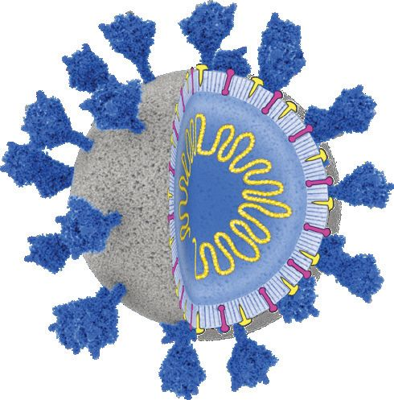

ജീവശാസ്ത്രം - IX
ക്യയാപ്സിഡ് ജനിതകവസ്തു
ചിത്രം 6.1 വൈറസ്
വൈറസുകളും വർഗീകരണവും ആറു കിങ്ഡം വർഗീകരണ ത്തിൽ എവിടേയും ഉൾക്കകൊ ള്ളിക്കാൻ കഴിഞ്ഞിട്ടില്ലാത്തവ യാണ് വൈറസുകൾ. എന്നാൽ അവയുടെ ഘടന, വിഘടന രീതികൾ, ജീനുകൾ എന്നിവ പരിഗണിച്ചുകൊൊണ്ട് വൈറോോ ളജിസ്റ്റുകളും ടാക്സോോണമി സ്റ്റുകളും വൈറസുകളെ തരം തിരിച്ച് അവയ്ക്കായി മാത്രമുള്ള ഫാമിലി, ജീനസ്, സ്പീഷീസ് എന്നിവയായി തരംതിരിച്ചിട്ടു ണ്ട്. വൈറസുകളുടെ ഇത്തരം വർഗീകരണം അവയുടെ സ്വഭാവം, പരിണാമം, വികാസം തുടങ്ങിയവ പഠന വിധേയമാക്കാനും, വൈറസ് രോോഗങ്ങളെ തുരത്താനുമുള്ള മാർഗങ്ങൾ വികസിപ്പിക്കാനും ശാസ്ത്രജ്ഞരെ സഹായിക്കുന്നു.
കോോശദ്രവ്യയം, കോോശാംഗങ്ങൾ, മർമ്മം എന്നിവയില്ലാത്ത സൂക്ഷ്മഘടനയാണ് വൈറസുകൾക്കുള്ളത്. ക്യയാപ്സിഡ് എന്ന് വിളിക്കുന്ന ഒരു ബാഹ്യപ്രരോട്ടീൻ കവചത്തിനുള്ളിൽ ജനിതക വസ്തുക്കൾ (ഡി.എൻ.എ. അല്ലെങ്കിൽ ആർ.എൻ.എ) കാണപ്പെടുന്നു. സസ്യങ്ങളും ജന്തുക്കളും ബാക്ടീരിയകളും ആർക്കിയകളും അടക്കമുളള വൈവിധ്യമാർന്ന ജീവജാല ങ്ങളെ ഇവ ബാധിക്കുന്നു. പ്രത്യയുൽപാദനം നടത്താനും പരിസ്ഥിതിയോോട് പ്രതികരി ക്കാനും വളരാനും ഉപാപചയ പ്രക്രിയകൾ നടത്താനുമുള്ള കഴിവുള്ളവയെയാണ് വർഗീകരണത്തിൽ ഉൾപ്പെടുത്തി യിരിക്കുന്നത്. വൈറസുകൾക്ക് ഒരു ആതിഥേയകോോശ ത്തിന്റെ സഹായമില്ലാതെ പെരുകാനാവില്ല. ഏതെങ്കിലും ജീവകോോശത്തിനു പുറത്ത് ഇവ നിർജീവമാണ്. ഇത്തര ത്തിലുള്ള സവിശേഷസ്വഭാവങ്ങൾ കൊൊണ്ട് നിലവിലുള്ള ആറ് കിങ്ഡം വർഗീകരണത്തിലെ ഒരു വിഭാഗത്തിലും ഇവയെ ഉൾപ്പെടുത്തിയിട്ടില്ല. y
വൈറസിന്റെ ഘടന
y
ഇതരകോോശങ്ങളിൽ നിന്ന് വൈറസുകൾക്കുള്ള വ്യത്യയാസം.
y
വർഗീകരണത്തിൽ വൈറസുകൾ ഉൾപ്പെടാത്തതിന് കാരണം.
വർഗീകരണരീതികളൊൊന്നും പൂർണ്ണമല്ല എന്ന് വ്യക്ത മായില്ലേ? കൂടുതൽ ശാസ്ത്രീയമായ വർഗീകരണ രീതികൾ വികസി പ്പിക്കാനുള്ള ശ്രമങ്ങൾ പുരോോഗമിക്കുന്നു. 150

ജീവശാസ്ത്രം - IX
വർഗീകരണത്തിലെ ആധുനിക സങ്കേതങ്ങളെക്കുറിച്ച് നൽകിയിട്ടുള്ള വിവരണം വിശകലനം ചെയ്ത് ധാരണ കൈവരിക്കൂ.
പരിണാമവൃക്ഷം (Evolutionary Tree) ഭൂമിയിലെ ജൈവവൈവിധ്യയം പരിണാമപ്രക്രിയകളുടെ ഫലമായാണ് രൂപപ്പെട്ടത്. വ്യത്യസ്തജീവികൾ തമ്മിലുള്ള പരിണാമബന്ധത്തെ ഒരു വൃക്ഷത്തിലെ ശാഖകളായി ചിത്രീകരിക്കാം. ഇത് പരിണാമവൃക്ഷം എന്നറിയപ്പെടുന്നു. ഇവിടെ ശാഖകൾ രൂപപ്പെടുന്ന ഇടം പൂർവികജീ വികളെയാണ് സൂചിപ്പിക്കുന്നത്. പരിണാമ ബന്ധങ്ങൾ ചിത്രീകരി ക്കുന്നതിലൂടെ വർഗീകരണം കൂടുതൽ കൃത്യമായിത്തീരുന്നു. ജൈവ വൈവിധ്യത്തെക്കുറിച്ച് ആഴത്തിൽ മനസ്സിലാക്കാനും ഇത് സഹായിക്കുന്നു. ചുരുക്കത്തിൽ, വർഗീകരണപഠനങ്ങളിൽ പരിണാമ വൃക്ഷം നിർണ്ണായക പങ്ക് വഹിക്കുന്നു. എങ്ങനെയാണ് പരിണാമവൃക്ഷം ചിത്രീകരിക്കുക? ലംഗ്ഫിഷ്, പല്ലി, നായ, മനുഷ്യൻ എന്നീ ജീവികളിലെ നാലു സവിശേഷതകൾ ഉൾപ്പെടുത്തിയ പട്ടിക 6.2 ശ്രദ്ധിക്കൂ. അവയെ സൂചകങ്ങളുടെ അടിസ്ഥാനത്തിൽ വിശകലനം ചെയ്യൂ. സവിശേഷതകൾ ജീവികൾ
തലയോോട്
മുൻകാലുകൾ
രോോമങ്ങൾ
മുലയൂട്ടൽ
ലങ്ഫിഷ്
ഉണ്ട്
ഇല്ല
ഇല്ല
ഇല്ല
പല്ലി
ഉണ്ട്
ഉണ്ട്
ഇല്ല
ഇല്ല
നായ
ഉണ്ട്
ഉണ്ട്
ഉണ്ട്
ഉണ്ട്
മനുഷ്യൻ
ഉണ്ട്
ഉണ്ട്
ഉണ്ട്
ഉണ്ട്
പട്ടിക 6.2 ജീവികളും സവിശേഷതകളും y
പരിഗണിച്ചിരിക്കുന്ന സവിശേഷതകൾ
y
സവിശേഷതകളെല്ലാം ഉള്ള ജീവികൾ
പട്ടികയിൽ നൽകിയിട്ടുള്ള സവിശേഷതകളുടെ അടിസ്ഥാനത്തിൽ ഈ ജീവികളുടെ പരിണാമവൃക്ഷം തയ്യാറാക്കിയിരിക്കുന്നത് എങ്ങനെ യെന്ന് ചിത്രീകരണം 6.5 വിശകലനം ചെയ്ത് നിഗമനം രേഖപ്പെടുത്തൂ. 151
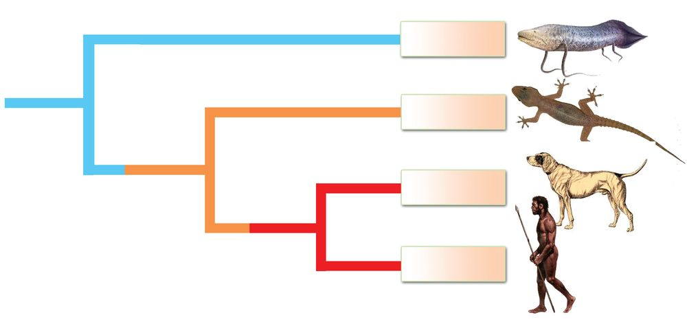
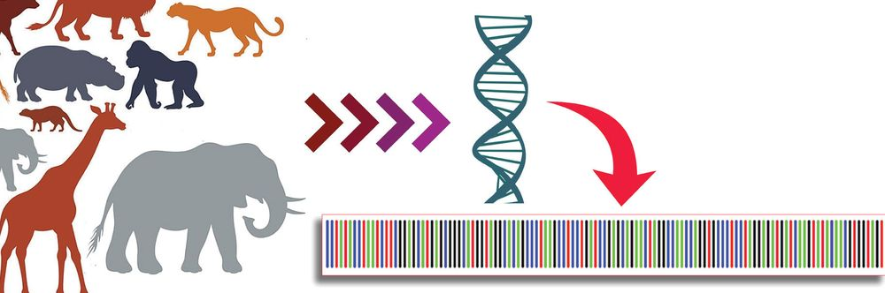
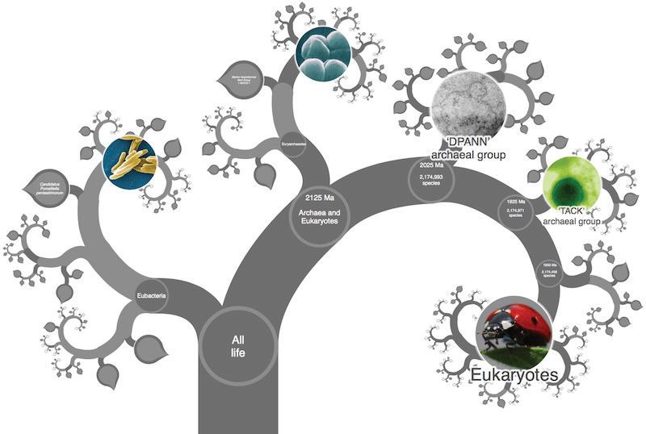
ജീവശാസ്ത്രം - IX
ലങ്ഫിഷ് തലയോോട്
പല്ലി മുൻകാലുകൾ
നായ
രോോമങ്ങൾ, മുലയൂട്ടൽ
മനുഷ്യൻ
ചിത്രീകരണം 6.5 പരിണാമവൃക്ഷം ജീവികൾ തമ്മിലുള്ള സാമ്യവ്യത്യയാസങ്ങളുടെ അടിസ്ഥാനത്തിൽ പരിണാമവൃക്ഷം തയ്യാറാക്കുന്നത് എങ്ങനെയെന്ന് മനസ്സിലാ ക്കിയല്ലലോ. പരിണാമവൃക്ഷത്തെക്കുറിച്ചും ജീവികൾ തമ്മിലുള്ള ബന്ധത്തെ ക്കുറിച്ചും അറിയാൻ https://www.onezoom.org/ എന്ന വെബ്സൈറ്റ് സന്ദർശിക്കൂ. ജീവികളെ വർഗീകരിക്കുന്നതിനുള്ള ഏറ്റവും ആധുനികസങ്കേ തമാണ് ഡി.എൻ.എ. ബാർകോോഡിങ്.
ഡി.എൻ.എ. ബാർകോോഡിങ്
152
ജീവശാസ്ത്രം - IX
ചുവടെ നൽകിയിരിക്കുന്ന വിവരണം സൂചകങ്ങൾക്കനുസരിച്ച് വിശകലനം ചെയ്തും വിവരശേഖരണം നടത്തിയും ഇതിനെപ്പറ്റി ധാരണ കൈവരിക്കൂ. ഡി.എൻഎയിലെ പ്രത്യയേക തന്മാത്രാശ്രേണികൾ (കോോഡുകൾ) താരതമ്യപ്പെടുത്തി ജീവികളെ വർഗീകരിക്കുന്ന സാങ്കേതിക വിദ്യയാണ് ഡി.എൻ.എ ബാർകോോഡിങ്. ആധുനിക ജീവശാസ്ത്ര ഗവേഷണങ്ങളിൽ സ്പീഷീസുകളെ തിരിച്ചറിയാൻ സഹായിക്കുന്ന ഏറ്റവും ശാസ്ത്രീയ സാങ്കേതികവിദ്യയാണിത്. പരമ്പരാഗതരീതി കളിൽ നിന്ന് വ്യത്യസ്തമായി തന്മാത്രാതലത്തിൽ സ്പീഷിസുകളെ തിരിച്ചറിയാൻ ഇത് സഹായിക്കുന്നു. ലോോകമെമ്പാടുമുള്ള ലബോോറട്ടറികളും ഗവേഷകരും ഡി.എൻ.എ. ബാർകോോഡുകൾ തയ്യാറാക്കി ഗവേഷണങ്ങൾക്കായി പങ്കുവയ്ക്കുന്നതിലൂടെയാണ് ഇത് സാധ്യമാകുന്നത്.
y
ഡി.എൻ.എ. ബാർകോോഡിങ്
y
ബാർകോോഡിംഗിന്റെ പ്രാധാന്യം
ജീവികളുടെ സവിശേഷതകൾ, ജീവിബന്ധങ്ങൾ, ജീവപരിണാമം, ജൈവവൈവിധ്യസംരക്ഷണം, ജൈവസാങ്കേതികവിദ്യ തുടങ്ങി സമസ്തമേഖലകളിലും വർഗീകരണം സ്വാധീനം ചെലുത്തുന്നു. ഇനിയും തിരിച്ചറിയപ്പെട്ടിട്ടില്ലാത്ത ലക്ഷക്കണക്കിന് ജീവജാലങ്ങൾ ഭൂമുഖത്തുണ്ട്. ചിലതിനെല്ലാം സ്വന്തമായി പേര് ലഭിക്കുന്നതിന് മുമ്പ് വംശനാശം സംഭവിച്ചുപോോയി. മറ്റു ചിലതാവട്ടെ വംശനാശഭീഷണി നേരിട്ടു കൊൊണ്ടിരിക്കുന്നു. ഈ ജീവജാലങ്ങളെയെല്ലാം തിരിച്ചറിഞ്ഞ് അവയെ സംരക്ഷിക്കാനുള്ള ബാധ്യത ജീവികളിലെ ഉയർന്ന ശ്രേണിയിൽ നിൽക്കുന്ന മനുഷ്യവർഗത്തിനാണ്. അതിലൂടെ മാത്രമേ മനുഷ്യനും നിലനിൽക്കാനാകൂ.
153
ജീവശാസ്ത്രം - IX
വിലയിരുത്താം 1. ചുവടെ നല്കിയ പട്ടിക വിശകലനം ചെയ്ത് ജീവികളുടെ
പരിണാമവൃക്ഷം ചിത്രീകരിക്കുക. സവിശേഷതകൾ
സ്രാവ്
തവള
കംഗാരു
മനുഷ്യൻ
നട്ടെല്ല്
ഉണ്ട്
ഉണ്ട്
ഉണ്ട്
ഉണ്ട്
ഉണ്ട്
ഉണ്ട്
ഉണ്ട്
ഉണ്ട്
ഉണ്ട്
രണ്ട് ജോോഡി കാലുകൾ പാലുൽപാദക ഗ്രന്ഥികൾ
ഉണ്ട്
പ്ലാസന്റ
2. വ്യത്യസ്ത ജന്തുക്കളെയും അവ ഉൾപ്പെടുന്ന ഫൈലങ്ങളെയും
തന്നിരിക്കുന്നു. അവയെ മാതൃകയിലേത് പോോലെ ജോോഡി യാക്കുക. മാതൃക : മനുഷ്യൻ - കോോർഡേറ്റ മനുഷ്യൻ, സ്പപോഞ്ചുകൾ, ഒച്ച്, ഹൈഡ്ര, ഉരുണ്ട വിര, നക്ഷത്രമത്സ്യം, മണ്ണിര, പാറ്റ, പ്ലനേറിയ
പോോറിഫെറ, നിഡേറിയ, പ്ലാറ്റിഹെൽമിന്തസ്, നിമറ്ററോഡ, അനലിഡ, ആർത്രരോപോോഡ, മൊൊളസ്ക, എക്കിനോോഡെർമേറ്റ, കോോർഡേറ്റ.
3.
വിവിധ സ്പീഷീസുകളെ തിരിച്ചറിയുന്നതിന് ഡി.എൻ.എ. ബാർകോോഡിങ് എന്ന സാങ്കേതികവിദ്യയാണ് ഉപയോോഗിക്കുന്നത്. ഇത് സാധ്യമാകുന്നതെങ്ങനെ?
4.
ചുവടെ തന്നിരിക്കുന്ന പ്രസ്താവനയോോടുള്ള നിങ്ങളുടെ പ്രതികര ണം എന്ത്?
കിങ്ഡം പ്ലാന്റേയിൽ സംവഹനകലകളില്ലാത്ത സസ്യങ്ങളെ യെല്ലാം ഒരു ഗ്രൂപ്പിലാണ് ഉൾപ്പെടുത്തിയിരിക്കുന്നത്.
154
ജീവശാസ്ത്രം - IX 5. കിങ്ഡം പ്ലാന്റേയിലെ ചില ഡിവിഷനുകളുടെ പ്രത്യയേകതകളാണ്
ചുവടെ തന്നിരിക്കുന്നത്. അവ വിശകലനം ചെയ്ത് ഡിവിഷനുകൾ തിരിച്ചറിഞ്ഞ് പേരെഴുതുക. a) സംവഹനകലകളുണ്ട്, പ്രത്യയുൽപാദനം സ്പപോറുകളിലൂടെ. b) വിത്തുകളെ പൊൊതിഞ്ഞ് ഫലങ്ങളില്ല, പ്രത്യയുൽപാദനം
വിത്തുകളിലൂടെ. c) സംവഹനകലകളില്ല, പ്രത്യയുൽപാദനം ഗാമീറ്റുകളിലൂടെയും സ്പപോറുകളിലൂടെയും 6. തന്നിരിക്കുന്ന പ്രസ്താവനകളിൽ അടിവരയിട്ട ഭാഗത്ത് തെറ്റുണ്ടെ ങ്കിൽ തിരുത്തിയെഴുതുക. a) കിങ്ഡത്തിന് മുകളിലായി ഉൾപ്പെടുത്തിയ വർഗീകരണ
തലമാണ് സ്പീഷീസ്.
b) നട്ടെല്ലുള്ള ജീവികളെ ഫൈലം കോോർഡേറ്റയിലെ വെർട്ടിബ്രേറ്റ
എന്ന സബ്ഫൈലത്തിൽ ഉൾപ്പെടുത്തിയിരിക്കുന്നു.
c) കരയിലും ജലത്തിലുമായി ജീവിതചക്രം പൂർത്തിയാക്കുന്ന
ജീവികൾ ഉൾപ്പെടുന്ന ക്ലാസ് ആണ് മമേലിയ.
7.
തന്നിരിക്കുന്ന പ്രസ്താവനയും കാരണവും വിശകലനം ചെയ്ത് ശരിയായവ കണ്ടെത്തി എഴുതുക. പ്രസ്താവന : വൈറസുകളെ നിലവിലുള്ള ആറ് കിങ്ഡം വർഗീകരണ ത്തിലെ ഒരു വിഭാഗത്തിലും ഉൾപ്പെടുത്തിയിട്ടില്ല. കാരണം : വൈറസുകൾ ജീവകോോശത്തിന് പുറത്ത് നിർജീവമാണ്. a) പ്രസ്താവന ശരി, കാരണം തെറ്റ് b) പ്രസ്താവനയും കാരണവും ശരി c) പ്രസ്താവന തെറ്റ്, കാരണം ശരി d) പ്രസ്താവനയും കാരണവും തെറ്റ് 8. പദബന്ധം തിരിച്ചറിഞ്ഞ് വിട്ട ഭാഗം പൂരിപ്പിക്കുക. a) ജെല്ലിഫിഷ് : നിഡേറിയ; കൊൊക്കപ്പുഴു : ------------b) ഞണ്ട് : ആർത്രരോപോോഡ; നീരാളി : ------------9. താഴെ തന്നിരിക്കുന്നവയിൽ മാവ്, തെങ്ങ് എന്നിവ ഉൾപ്പെടുന്ന വിഭാഗം ഏത്? a) ബ്രയോോഫൈറ്റ b) ടെറിഡോോഫൈറ്റ c) ജിംനോോസ്പേംസ് d) ആൻജിയോോസ്പേംസ് 155

ജീവശാസ്ത്രം - IX
തുടർപ്രവർത്തനങ്ങൾ 1.
നിങ്ങളുടെ പ്രദേശത്തെ വിവിധ ജീവികളുടെ സാധാരണ നാമം, ശാസ്ത്രീയനാമം എന്നിവ ഉൾപ്പെടുത്തി ഒരു പ്രാദേശിക ജൈവവൈവിധ്യ രജിസ്റ്റർ തയ്യാറാക്കി തദ്ദേശ സ്വയംഭരണ സ്ഥാപനത്തിൽ സമർപ്പിക്കൂ.
2.
ലഭ്യമായ വിത്തുകൾ ശേഖരിച്ച് സ്കൂൾ ജീവശാസ്ത്രലാബിൽ ഒരു വിത്തുബാങ്ക് നിർമ്മിക്കൂ.
3. കേരളത്തിൽ അടുത്തകാലത്ത് കണ്ടെത്തിയ ജീവികളെക്കുറിച്ച്
വിവരശേഖരണം നടത്തി ക്ലാസിൽ പ്രദർശിപ്പിക്കൂ. 4.
ഒരു
ചുമർപത്രിക
തയാറാക്കി
വിദ്യയാലയത്തിനു ചുറ്റുപാടുമുള്ള ജീവജാലങ്ങളെ നിരീക്ഷിച്ച് അവയെ വർഗീകരിക്കൂ.
156
ജീവശാസ്ത്രം - IX
കുറിപ്പുകൾ ------------------------------------------------------------------------------------------------------------------------------------------------------------------------------------------------------------------------------------------------------------------------------------------------------------------------------------------------------------------------------------------------------------------------------------------------------------------------------------------------------------------------------------------------------------------------------------------------------------------------------------------------------------------------------------------------------------------------------------------------------------------------------------------------------------------------------------------------------------------------------------------------------------------------------------------------------------------------------------------------------------------------------------------------------------------------------------------------------------------------------------------------------------------------------------------------------------------------------------------------------------------------------------------------------------------------------------------------------------------------------------------------------------------------------------------------------------------------------------------------------------------------------------------------------------------------------------------------------------------------------------------------------------------------------------------------------------------------------------------------------------------------------------------------------------------------------------------------------------------------------------------------------------------------------------------------------------------------------------------------------------------------------------------------------------------------------------------------------------------------------------------------------------------------------------------------------------------------------------------------------------------------------------------------------------------------------------------------------------------------------------------------------------------------------------------------------------------------------------------------------------------------------------------------------------------------------------------------------------------------------------------------------------------------------------------------------------------------------------------------------------------------------------------------------------------------------------------------------------------------------------------------------------------------------------------------------------------------------------------------------------------------------------------------------------------------------------------------------------------------------------------------------------------------------------------------------------------------------------------------------------------------------------------------------------------------------------------------------------------------------------------------------------------------------------------------157
ജീവശാസ്ത്രം - IX
കുറിപ്പുകൾ ------------------------------------------------------------------------------------------------------------------------------------------------------------------------------------------------------------------------------------------------------------------------------------------------------------------------------------------------------------------------------------------------------------------------------------------------------------------------------------------------------------------------------------------------------------------------------------------------------------------------------------------------------------------------------------------------------------------------------------------------------------------------------------------------------------------------------------------------------------------------------------------------------------------------------------------------------------------------------------------------------------------------------------------------------------------------------------------------------------------------------------------------------------------------------------------------------------------------------------------------------------------------------------------------------------------------------------------------------------------------------------------------------------------------------------------------------------------------------------------------------------------------------------------------------------------------------------------------------------------------------------------------------------------------------------------------------------------------------------------------------------------------------------------------------------------------------------------------------------------------------------------------------------------------------------------------------------------------------------------------------------------------------------------------------------------------------------------------------------------------------------------------------------------------------------------------------------------------------------------------------------------------------------------------------------------------------------------------------------------------------------------------------------------------------------------------------------------------------------------------------------------------------------------------------------------------------------------------------------------------------------------------------------------------------------------------------------------------------------------------------------------------------------------------------------------------------------------------------------------------------------------------------------------------------------------------------------------------------------------------------------------------------------------------------------------------------------------------------------------------------------------------------------------------------------------------------------------------------------------------------------------------------------------------------------------------------------------------------------------------------------------------------------------------------------------------158
ഭാരതത്തിന്റെ ഭരണഘടന ഭാഗം IV ക
മൗലിക കർത്തവ്യങ്ങൾ 51 ക. മൗലിക കർത്തവ്യങ്ങൾ - താഴെപ്പറയുന്നവ ഭാരതത്തിലെ ഓരോോ പൗരന്റെയും
കർത്തവ്യയം ആയിരിക്കുന്നതാണ് :
(ക)
ഭരണഘടനയെ അനുസരിക്കുകയും അതിന്റെ ആദർശങ്ങളെയും സ്ഥാപനങ്ങ ളെയും ദേശീയപതാകയെയും ദേശീയഗാനത്തെയും ആദരിക്കുകയും ചെയ്യുക;
(ഖ) സ്വാതന്ത്ര്യത്തിനുവേണ്ടിയുള്ള നമ്മുടെ ദേശീയസമരത്തിന് പ്രചോോദനം നൽകിയ മഹനീയാദർശങ്ങളെ പരിപോോഷിപ്പിക്കുകയും പിൻതുടരുകയും ചെയ്യുക; (ഗ)
ഭാരതത്തിന്റെ പരമാധികാരവും ഐക്യവും അഖണ്ഡതയും നിലനിർത്തുകയും സംരക്ഷിക്കുകയും ചെയ്യുക;
(ഘ) രാജ്യത്തെ കാത്തുസൂക്ഷിക്കുകയും ദേശീയസേവനം അനുഷ്ഠിക്കുവാൻ ആവശ്യ പ്പെടുമ്പപോൾ അനുഷ്ഠിക്കുകയും ചെയ്യുക; (ങ) മതപരവും ഭാഷാപരവും പ്രാദേശികവും വിഭാഗീയവുമായ വൈവിധ്യങ്ങൾക്കതീ തമായി ഭാരതത്തിലെ എല്ലാ ജനങ്ങൾക്കുമിടയിൽ, സൗഹാർദവും പൊൊതുവായ സാഹോോദര്യമനോോഭാവവും പുലർത്തുക. സ്ത്രീകളുടെ അന്തസ്സിന് കുറവു വരുത്തുന്ന ആചാരങ്ങൾ പരിത്യജിക്കുക; (ച)
നമ്മുടെ സമ്മിശ്രസംസ്കാരത്തിന്റെ സമ്പന്നമായ പാരമ്പര്യത്തെ വിലമതിക്കുകയും നിലനിറുത്തുകയും ചെയ്യുക;
(ഛ) വനങ്ങളും തടാകങ്ങളും നദികളും വന്യജീവികളും ഉൾപ്പെടുന്ന പ്രകൃത്യയാ ഉള്ള പരിസ്ഥിതി സംരക്ഷിക്കുകയും അഭിവൃദ്ധിപ്പെടുത്തുകയും ജീവികളോോട് കാരുണ്യയം കാണിക്കുകയും ചെയ്യുക; (ജ)
ശാസ്ത്രീയമായ കാഴ്ചപ്പാടും മാനവികതയും, അന്വവേഷണത്തിനും പരിഷ്കരണ ത്തിനും ഉള്ള മനോോഭാവവും വികസിപ്പിക്കുക;
(ഝ) പൊൊതുസ്വത്ത് പരിരക്ഷിക്കുകയും ശപഥം ചെയ്ത് അക്രമം ഉപേക്ഷിക്കുകയും ചെയ്യുക; (ഞ) രാഷ്ട്രം യത്നത്തിന്റെയും ലക്ഷഷ്യപ്രാപ്തിയുടെയും ഉന്നതതലങ്ങളിലേക്ക് നിരന്തരം ഉയരത്തക്കവണ്ണം വ്യക്തിപരവും കൂട്ടായതുമായ പ്രവർത്തനത്തിന്റെ എല്ലാ മണ്ഡലങ്ങളിലും ഉൽക്കൃഷ്ടതയ്ക്കുവേണ്ടി അധ്വാനിക്കുക; (ട)
ആറിനും പതിനാലിനും ഇടയ്ക്ക് പ്രായമുള്ള തന്റെ കുട്ടിക്കകോ തന്റെ സംരക്ഷണ യിലുള്ള കുട്ടികൾക്കകോ, അതതു സംഗതി പോോലെ, മാതാപിതാക്കളോോ രക്ഷാകർ ത്താവോോ വിദ്യയാഭ്യയാസത്തിനുള്ള അവസരങ്ങൾ ഏർപ്പെടുത്തുക.
കുട്ടികളുടെ അവകാശങ്ങൾ പ്രിയമുള്ള കുട്ടികളേ, നിങ്ങൾക്കുള്ള അവകാശങ്ങളെന്തെല്ലാമെന്ന് അറിയേണ്ടതില്ലേ? അവകാശങ്ങളെക്കു റിച്ചുള്ള അറിവ് നിങ്ങളുടെ പങ്കാളിത്തം, സംരക്ഷണം, സാമൂഹികനീതി എന്നിവ ഉറപ്പാക്കാൻ പ്രേരണയും പ്രചോോദനവും നൽകും. നിങ്ങളുടെ അവകാശങ്ങൾ സംരക്ഷിക്കാൻ ഇപ്പപോൾ ഒരു കമ്മീഷൻ പ്രവർത്തിക്കുന്നുണ്ട്. കേരള സംസ്ഥാന ബാലാവകാശസംരക്ഷണ കമ്മീഷൻ എന്നാണ് അതിന്റെ പേര്. എന്തെല്ലാമാണ് നിങ്ങൾക്കുള്ള അവകാശങ്ങൾ എന്നു നോോക്കാം. y സംസാരത്തിനും ആശയപ്രകടനത്തിനു മുള്ള സ്വാതന്തത്ര്യം y ജീവന്റെയും വ്യയക്തിസ്വാതന്ത്ര്യയത്തി ന്റെയും സംരക്ഷണം y അതിജീവനത്തിനും പൂർണ്ണവികാസത്തി നുമുള്ള അവകാശം y ജാതി-മത-വർഗ-വർണ്ണ ചിന്തകൾക്കതീത മായി ബഹുമാനിക്കപ്പെടാനും അംഗീകരി ക്കപ്പെടാനുമുള്ള അവകാശം y മാനസികവും ശാരീരികവും ലൈംഗി കവുമായ പീഡനങ്ങളിൽ നിന്നുള്ള സംര ക്ഷണത്തിനും പരിചരണത്തിനുമുള്ള അവകാശം y പങ്കാളിത്തത്തിനുള്ള അവകാശം y ബാലവേലയിൽനിന്നും ആപൽക്കര മായ ജോോലികളിൽനിന്നുമുള്ള മോോചനം y ശൈശവവിവാഹത്തിൽനിന്നുള്ള ക്ഷണം
സംര
y സ്വവന്തം സംസ്കാരം അറിയുന്നതിനും അതനുസരിച്ച് ജീവിക്കുന്നതിനുമുള്ള സ്വവാതന്തത്ര്യം
y അവഗണനകളിൽനിന്നുള്ള സംരക്ഷണം y സൗൗജന്യയവും നിർബന്ധിതവുമായ വിദ്യാാ ഭ്യയാസ അവകാശം y കളിക്കാനും പഠിക്കാനുമുള്ള അവകാശം y സ്നേഹവും സുരക്ഷയും നൽകുന്ന കുടുംബവും സമൂഹവും ലഭ്യമാകാനുള്ള അവകാശം
നിങ്ങളുടെ ചില ഉത്തരവാദിത്വങ്ങൾ y സ്കൂൾ, പൊൊതുസംവിധാനങ്ങൾ എന്നിവ നശിപ്പിക്കാതെ സംരക്ഷിക്കുക. y സ്കൂളിലും പഠനപ്രവർത്തനങ്ങളിലും കൃത്യയ നിഷ്ഠ പാലിക്കുക. y സ്കൂൾ അധികാരികളെയും അധ്യാാപ കരെയും മാതാപിതാക്കളെയും സഹപാഠി കളെയും ബഹുമാനിക്കുകയും അംഗീകരി ക്കുകയും ചെയ്യുക. y ജാതി-മത-വർഗ-വർണ്ണ ചിന്തകൾക്കതീ തമായി മറ്റുള്ളവരെ ബഹുമാനിക്കാനും അംഗീകരിക്കാനും സന്നദ്ധരാവുക.
ബന്ധപ്പെടേണ്ട വിലാസം:
കേരള സംസ്ഥാന ബാലാവകാശസംരക്ഷണ കമ്മീഷൻ
ശ്രീ ഗണേഷ്, റ്റി.സി. 14/2036, വാൻറോോസ് ജംങ്ഷൻ, കേരള യൂണിവേഴ്സിറ്റി പി.ഒ, തിരുവനന്തപുരം – 34 ഫോോൺ 0471 – 2326603 ഇ- മെയിൽ childrights.cpcr@kerala.gov.in, rte.cpcr@kerala.gov.in വെബ്സൈറ്റ് : www.kescpcr.kerala.gov.in ചൈൽഡ് ഹെൽപ്പ് ലൈൻ - 1098, ക്രൈം സ്റ്റോപ്പർ - 1090, നിർഭയ – 1800 425 1400 കേരള പൊൊലീസ് ഹെൽപ്പ് ലൈൻ - 0471 – 3243000/44000/45000 online R.T.E Monitoring : www.nireekshana.org.in